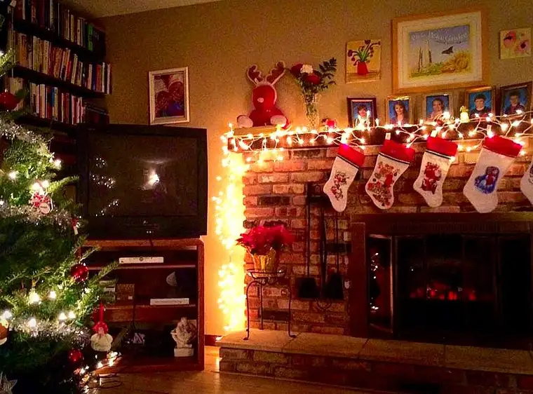

This is the way we introverts roll.
The other night, I had an hour to kill while waiting for my boys to finish their piano-lesson session. My “to do” list growing by the day, I knew the most efficient use of my time from the outsider’s perspective would have been to head to the supermarket nearby and check a few more items off my Christmas list. And I was tempted.
The last couple times I’ve been in said supermarket, however, it has taken me far too long to get out of there. The check-out aisles are narrow, and there never seems to be enough help, so the lines are long. You think you’re done and out of there, but you end up standing in line…and waiting…and waiting…and before you know it, the hour’s up.
And what’s more, I’d had a really emotional day, so my tank was, well, about to tank out. That hour might well have gotten me further down on my list in the short haul, but I knew I’d pay the price later. So I did what would seem unwise from the exterior.
Instead of turning right, into the supermarket parking lot, I hung a left in search of a quiet little coffee shop where I could stop…and sit…and have a little something warm to drink…and open my Christmas cards, which I’d been saving for such a moment. I needed that pause like nothing else.
 |
| One of my quiet places… |
{kind=link}
That hour in a corner of a coffee shop saved me. I could feel myself coming back to life. One hour spent decompressing bought me several more of productivity on a jam-packed night. If I’d gone right instead of left, I never would have made it through.
So what about the technovert? Thanks for your patience. I’m almost there!
It’s because, as she noted, “sending a text is far less stimulating than having a conversation with someone. It allows us to connect without having to be so ‘on.'”
Introvert alert: you get it don’t you? Yep, I thought so.
A corner in the coffee shop reading Christmas cards was like a text. It allowed me to deal with life at my own pace. The busy supermarket with few hiding places would have been like a phone conversation. And it would have taken from me what I did not have left to give.
In the same interview, the questioner also noted that texting and emailing allow communication on one’s own time frame, which seems to fit the introverted among us. “I’m an introvert,” she said “and when email was invented, it was the best day of my life.”
{kind=link}
To which Cain responded, “I felt that way, too. Introverts want to process things before they articulate them, and when you’re having a (phone or in-person) conversation, you can’t do that.”
Bingo! I could share so many examples to illustrate this very point. But if you’re an introvert, you don’t really need me to. You just know.
So what about you? Do you tend to screen phone calls, and fall on texts and email as your main modes of communication? If so, it’s likely you’re an introvert.
Given all this, it’s plain to see we introverts live in a time that suits us well. With technology at our disposal, and our preferred method of communication, we’re set. As usual, we just need to make sure we balance that out with real-life interactions.
Fellow introverts, I know I’m not telling you anything you don’t already know. I just want to remind you that you’re not alone.
Q4U: Email or phone call?